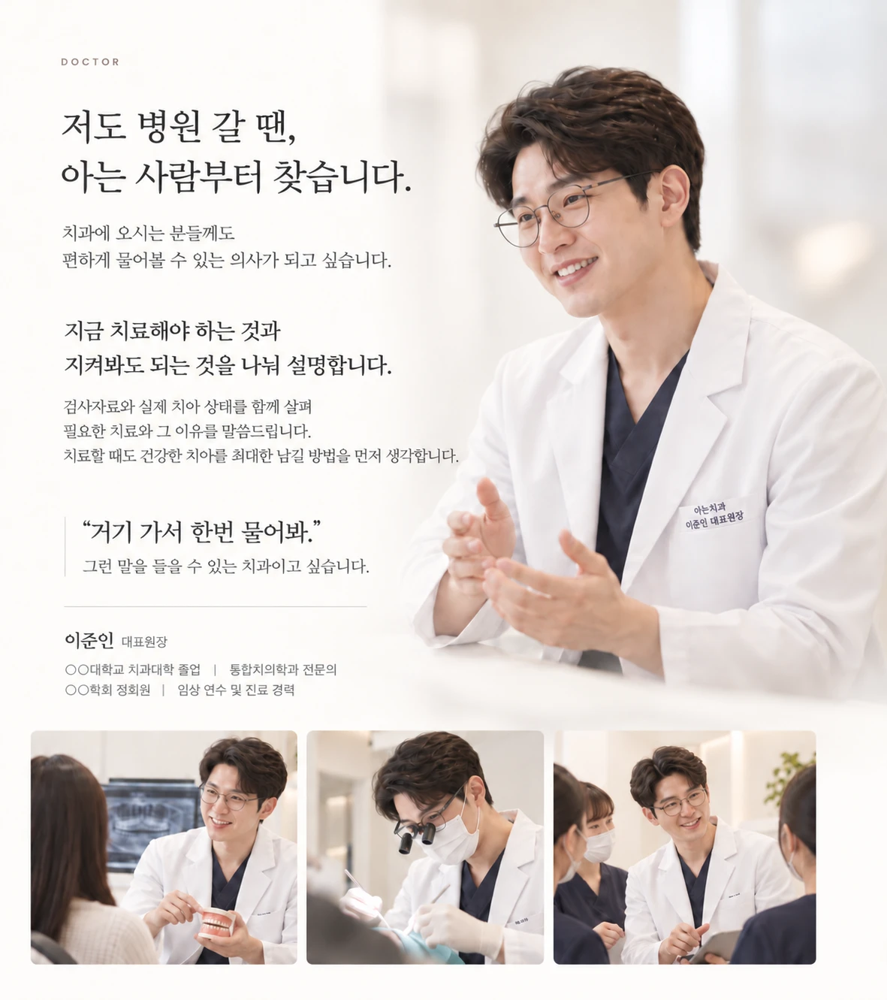
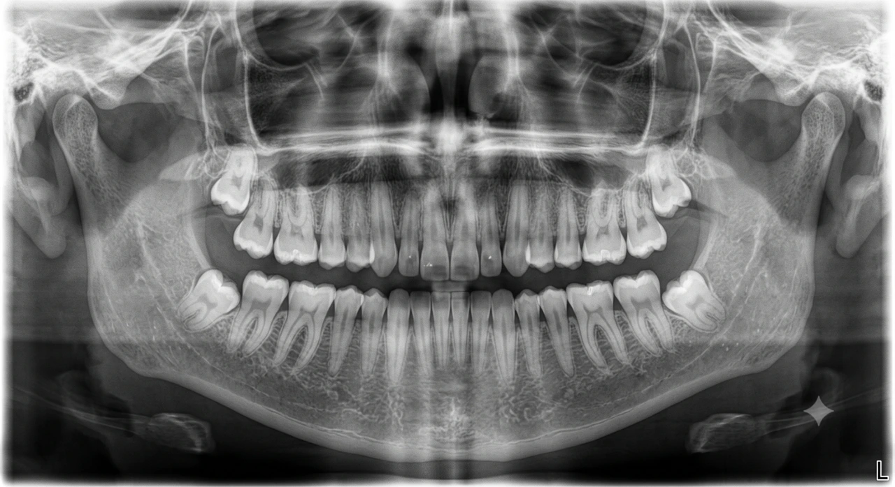
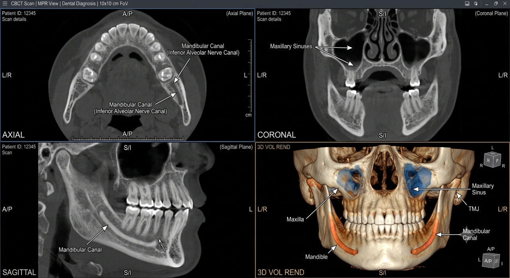
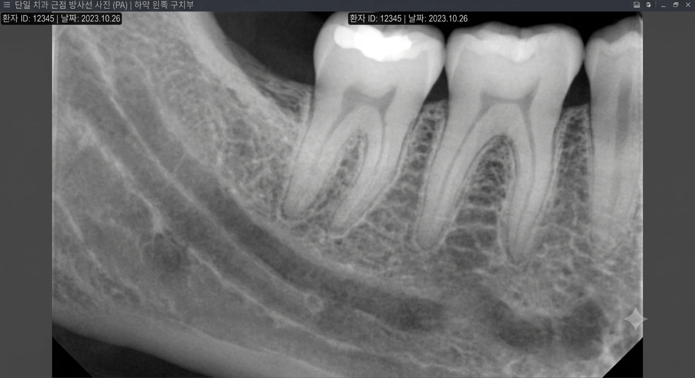
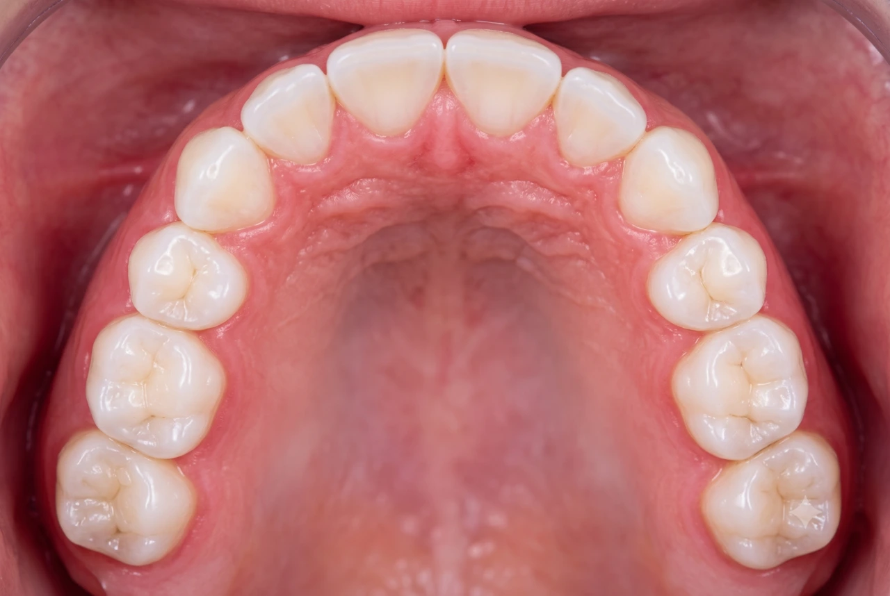
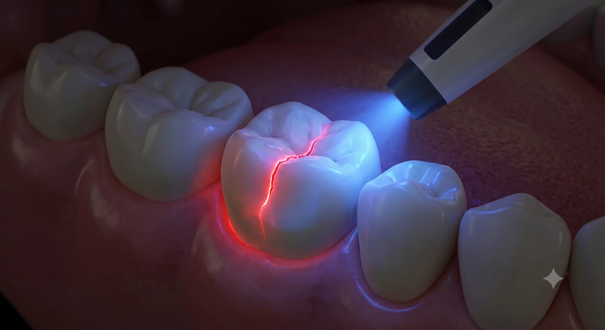
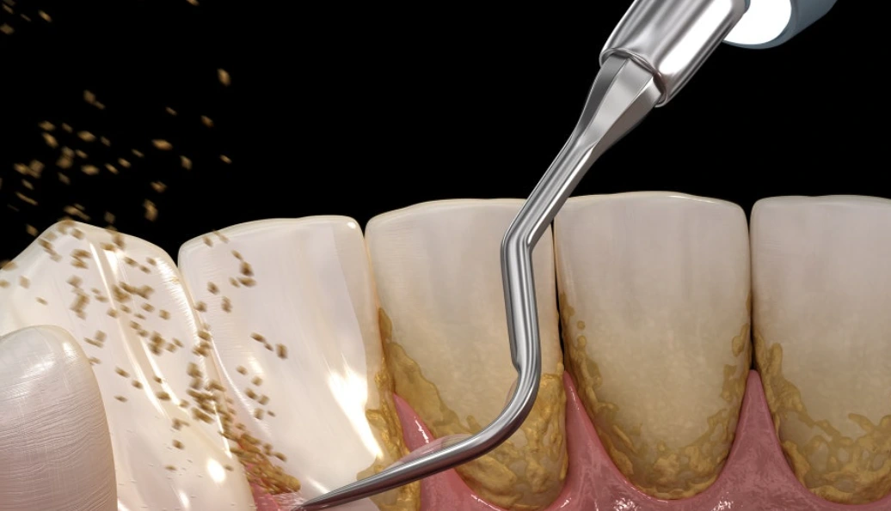

먼저 충분히 설명합니다.
현재 상태와 필요한 치료를
이해하기 쉽게 말씀드립니다.
치료를 결정하기 전에,
편하게 물어볼 수 있는 치과.
현재 상태와 필요한 치료를
이해하기 쉽게 말씀드립니다.
지금 해야 할 것과
지켜봐도 되는 것을 나눕니다.
필요한 점검과 관리까지
이어갑니다.
치과에 오시는 분들께도
편하게 물어볼 수 있는 의사가 되고 싶습니다.
“거기 가서 한번 물어봐.”
그런 말을 들을 수 있는 치과이고 싶습니다.
치과에 오시는 분들께도
편하게 물어볼 수 있는 의사가 되고 싶습니다.
검사자료와 실제 치아 상태를 함께 살펴
필요한 치료와 그 이유를 말씀드립니다.
치료할 때도 건강한 치아를 최대한 남길 방법을
먼저 생각합니다.
“거기 가서 한번 물어봐.”
그런 말을 들을 수 있는 치과이고 싶습니다.
이준인 대표원장

현재 상태를 함께 확인하고, 필요한 치료를 설명합니다.
먼저 듣습니다.
02 제대로 봅니다.

치아 전체와 잇몸뼈
입 안 전체를 넓게 살펴 치아와 잇몸뼈의 상태를 확인합니다.

입체적으로 보는 구조
필요한 경우 뼈와 신경 등 주변 구조를 입체적으로 확인합니다.

한 치아를 더 자세히
필요한 부위를 촬영해 치아 뿌리와 주변 조직을 확인합니다.

눈으로 보는 현재 상태
치아와 잇몸을 촬영해 현재 상태를 함께 살펴봅니다.

육안 검사를 보완하는 확인
형광 영상을 활용해 치아 상태를 확인하는 데 참고합니다.
모든 검사를 일괄 진행하는 것은 아닙니다. 증상과 치아 상태에 따라 필요한 검사를 선택합니다.
지금 치료해야 하는 것과
지켜봐도 되는 것을 나눠 말씀드립니다.
03 가볍게 관리하는 것부터.

올해 보험 적용 여부를 확인해 드립니다.
후속 치주치료 없이 치석제거만으로 종료되는 경우 적용됩니다.
본인부담금은 보험 자격과 진료 내용에 따라 안내합니다.
스케일링만 받으러
오셔도 됩니다.
진료 전 상태를 확인하고
가글 마취 후 진행합니다.
시림이 큰 부위는 손기구로
부분적으로 진행합니다.
마무리 관리까지
함께합니다.
다음에 무엇을 할지
미리 말씀드려
긴장을 줄입니다.
통증 저감 장비를 활용해
마취 과정의 불편함을
줄입니다.
긴장이 큰 분들을 위해
작은 편의를 준비합니다.
불편한 증상에서 시작해, 필요한 치료와 그 이유를 설명합니다.
잇몸과 잇몸뼈의 상태를 확인하고,
염증의 범위에 맞는 치료를 안내합니다.
잇몸 염증의 범위를 확인하기 위해
잇몸 깊이와 검사자료를 함께 살펴 치료 범위를 정합니다.
염증을 일으키는 치석을 제거하기 위해
잇몸 상태에 맞춰 필요한 부위의 치석을 세심하게 제거합니다.
염증 상태에 맞춰 치료를 보완하도록
필요한 경우 잇몸 부위의 약물 처치를 고려합니다.
씹을 때 느껴지는 통증의 원인을 확인하고,
치아 상태에 맞는 치료를 결정합니다.
필요한 치료 범위를 판단하기 위해
균열과 신경 상태 등을 살펴 치료 방법을 결정합니다.
치아를 보호하고 씹는 힘을 고려하도록
보철물의 경계와 주변 치아의 맞물림을 세심하게 확인합니다.
문제가 있는 신경관을 치료하기 위해
신경치료가 필요한 경우 신경관의 형태에 맞춰 세척과 치료를 진행합니다.
치아의 손상 범위를 확인하고,
건강한 치아를 남기며 필요한 부위를 복원합니다.
건강한 치아를 더 남기기 위해
필요한 부위만 정리하고 남길 수 있는 치아를 보존합니다.
주변 치아와 자연스럽게 어울리도록
치아의 색과 투명도를 고려해 여러 층으로 쌓아 복원합니다.
손상된 부위를 안정적으로 복원하도록
넓은 손상 부위는 인레이를 고려하고 접착 과정을 세심하게 진행합니다.
시린 원인을 먼저 확인하고,
치아가 패이거나 뿌리가 노출된 부위에 맞는 치료를 안내합니다.
시린 증상을 줄이기 위해
노출된 부위에 코팅제를 2회 도포합니다.
경계 부위까지 꼼꼼하게 채우기 위해
잇몸 가까운 부위까지 확인하며 레진을 채웁니다.
이물감과 착색을 줄이기 위해
거친 연마부터 마무리 광택까지 표면을 다듬습니다.
사랑니의 위치와 주변 구조를 확인하고,
발치가 필요한지 먼저 판단합니다.
치아 뿌리와 신경의 관계를 확인하기 위해
필요한 경우 CT로 주변 구조를 확인해 발치 계획을 세웁니다.
주변 조직의 손상을 줄이기 위해
필요한 경우 치아를 나누어 주변 잇몸과 뼈를 고려하며 발치합니다.
발치 부위의 지혈을 돕기 위해
출혈과 상처 상태에 따라 콜라겐 지혈제 사용을 고려합니다.
턱관절과 주변 근육의 상태를 살펴,
통증의 원인에 맞는 치료를 안내합니다.
관절과 근육의 상태를 확인하기 위해
진찰과 필요한 영상검사를 통해 치료 방향을 정합니다.
턱 주변의 긴장과 불편을 줄이기 위해
증상에 따라 필요한 물리치료를 선택합니다.
근육과 관절에 가해지는 부담을 고려하도록
검사 결과에 따라 보톡스나 스플린트의 필요성을 판단합니다.
흔들리는 치아를 살릴 수 있는지 먼저 확인하고,
필요한 경우 임플란트를 계획합니다.
개인별 상태에 맞는 위치를 계획하도록
잇몸뼈의 양과 주변 구조를 함께 확인합니다.
씹는 힘이 한곳에 집중되지 않도록
주변 치아와 맞물림을 고려해 보철물을 설계합니다.
주변 잇몸과 자연스럽게 이어지도록
잇몸 상태를 고려해 보철물의 형태와 위치를 계획합니다.
같은 증상이라도 원인은 다를 수 있습니다. 검사 후 치아 상태에 맞는 치료를 안내합니다.
살릴 수 있는 치아부터 확인
수술 전 충분한 설명
심은 뒤까지 계획
정확한 진단을 바탕으로
개인별 뼈 상태에 맞춰 식립 위치를 계획합니다.
뼈 상태를 확인해
식립 위치를 계획
주변 치아와 맞물림을 고려해
오래 사용할 수 있도록 교합을 설계합니다.
맞물림을 고려해
씹는 힘을 설계
잇몸 라인과 주변 치아와의 조화를 고려해
보철물의 형태와 위치를 계획합니다.
잇몸 조화를 살펴
보철 형태를 계획
임플란트는 정기적인 관리가 필요합니다.
오래도록 편안히 사용할 수 있도록
상태에 맞는 사후관리를 안내합니다.
정기 검진임플란트 주변 상태 점검
교합 확인씹는 힘의 변화 확인
주변 위생관리잇몸과 보철물 청결 관리
보철물 점검나사 풀림·마모 등 확인
진료 이해를 위한 예시 이미지입니다. 실제 환자의 치료 사례가 아닙니다.
편안하게 방문하실 수 있도록 자세히 안내드립니다.
경기 ○○시 ○○로 123, ○○빌딩 3층
○○역 1번 출구에서 도보 3분
월 · 수 · 금09:30 – 18:30
화 · 목09:30 – 21:00
토요일09:30 – 14:00
점심시간13:00 – 14:00
000–0000–0000
○○건물 지하주차장 이용 가능
내원 시 주차권을 드립니다.
○○역 1번 출구 도보 3분
○○버스 정류장 도보 1분
주소·연락처·진료시간은 샘플 정보입니다.